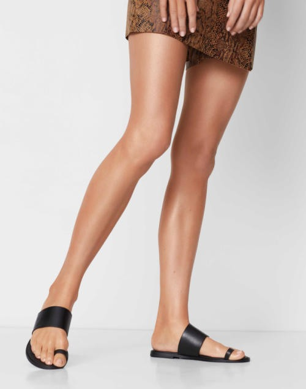
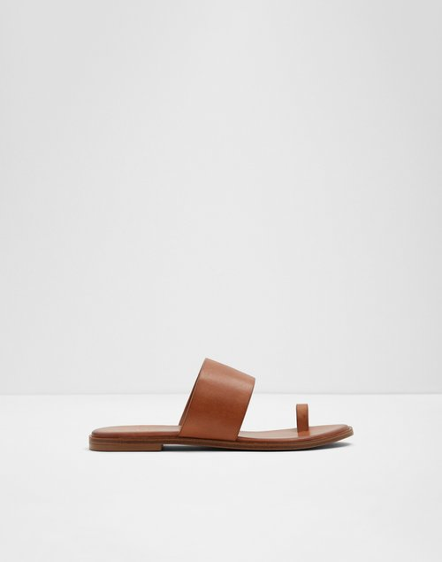
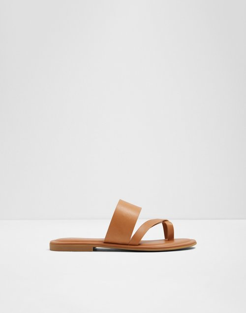
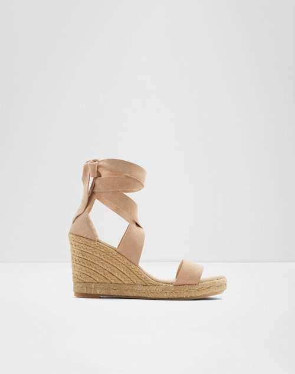
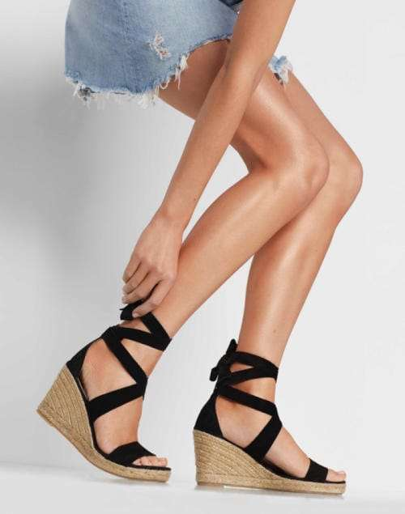
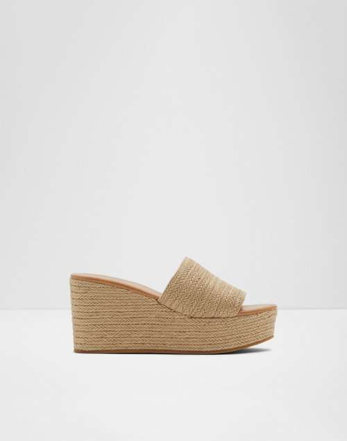

Tienes que ver ésto: Las sandalias planas
para mujer más cómodas (& elegantes) para
la primavera. Desde lazos alrededor del pie
hasta correas anchas, no es una sorpresa que
las sandalias planas sean la opción
minimalista favorita para ese look casual,
espontáneo y relajado de todo momento.
Sandalias Planas
Tienes que ver ésto: Las sandalias planas para mujer más cómodas (& elegantes) para la primavera. Desde lazos alrededor del pie hasta correas anchas, no es una sorpresa que las sandalias planas sean la opción minimalista favorita para ese look casual, espontáneo y relajado de todo momento.



Sandalias De Plataforma
Elegante, versátil y sin complicaciones. Nuestras sandalias de plataforma con el dedo descubierto para mujeres combinan muy fácilmente con todo y puedes llevarlas a todas partes. Canaliza esas vibraciones bohemias con trenzas en cuerda, yute, tejidos, fibras y detalles inspirados en alpargatas.



Sandalias De Tacon Alto
Estilos frescos y modernos con detalles coloridos ideales para la primavera. Desde las esenciales sandalias amarradas a los tobillos hasta los tacones de aguja con tiras, un elegante par te está esperando.